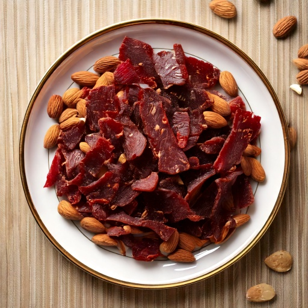

Portable at walang-preparation na combo ng no-added-sugar beef jerky at raw almonds.
Nutrition Facts (kada serving)
278
Calories
10g
Carbs
19g
Protein
20g
Fat
5g
Fiber
~0
GI Est.
Bakit bagay ito sa diyeta na angkop sa diabetic
Sa 10g na carbs kada serving, kasya ito nang komportable sa karamihan ng low-carb na meal plan para sa diabetes, at ang estimate na glycemic index na ~0 nito ay nangangahulugang mabagal na natutunaw ang carbs nito imbes na biglang magpataas ng asukal sa dugo, at ang 19g na protein kada serving ay tumutulong din para mas mabagal ang pagtunaw at mas smooth ang anumang pagtaas pagkatapos kumain.
Mga Sangkap
- 1 oz30 g beef jerky, walang added sugar
- 1/4 cup60 ml almonds
Nasa App Na
Nasa GlucoBeacon app na ang recipe na ito — idagdag agad sa iyong Shopping List at daily carb tracker sa isang tap, libre.
Nasa app din — libre
- 🍽️ Restaurant Advisor — 3,700+ menu items mula sa 53 chains
- 📷 AI Food Camera — i-point, i-scan, malaman agad ang carbs
- 🩺 A1C Estimator — mula sa mga naka-log na reading mo
Mga Hakbang
- Ihain ang beef jerky at almonds nang magkasama at tamasahin — walang kailangang preparation.